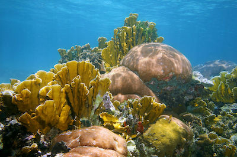

Diving
With over 360 miles of coastline and several offshore islands to explore, Puerto Rico offers Caribbean diving for most interests.
Bioluminesent Bay
Mosquito Bay is located on the southern shore of the island of Vieques, one of the islands of Puerto Rico. The bioluminescent bay in Vieques was officially declared the brightest in the world by Guinness Book of World Records in 2008.
Exploration
Old San Juan is home to the San Juan National Historic Site, with buildings dating from the 16th century. Brightly colored houses line cobbled streets and shady plazas, alongside cool cocktail bars and renowned Caribbean fusion restaurants.
Culinary delights
Thanks to its inventive and visionary chefs, myriad cultural influences, and an incredible natural bounty, the food in Puerto Rico is as exciting and diverse as the island itself. In fact, there's so much good food here that anyone who settles for mediocre resort fare instead of sampling the island's incredible culinary offerings should not be allowed on to an airplane to leave until they do. Whether you're after homestyle comida criolla, fresh-off-the-boat seafood, something elegant paired with a beautiful French wine or boundary-pushing gastronomy, there's a restaurant in Puerto Rico to suit your taste, mood, or price point.